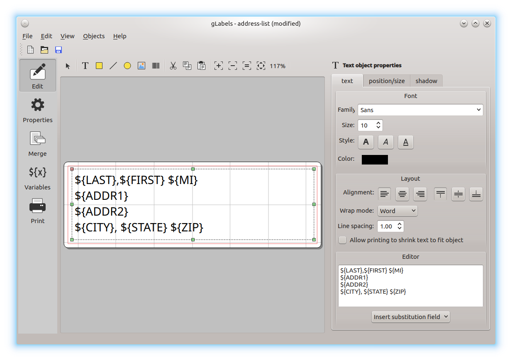
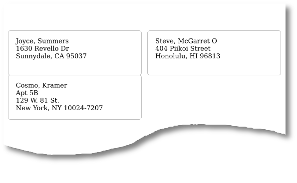

Skipping blank address lines
This feature can be best described by a simple example. In the following CSV file, column 5 (ADDR2) contains the second address line for each record. This field is empty in records 1 and 2, but not in record 3. (For this feature to work, the field must be completely empty – any text, including spaces will defeat this feature.)
LAST,FIRST,MI,ADDR1,ADDR2,CITY,STATE,ZIP
Summers,Joyce,,"1630 Revello Dr",,Sunnydale,CA,95037
McGarret,Steve,O,"404 Piikoi Street",,Honolulu,HI,96813
Kramer,Cosmo,,"Apt 5B","129 W. 81 St.","New York",NY,10024-7207
In the following screenshot, a single multiline text object has been created to format these addresses. Notice that ${ADDR2} representing the second address line is on a line by itself. (Any additional text on this line, including spaces would defeat this feature.)

Printing this label results in the following output. Notice that the line containing the ${ADDR2} field is completely skipped for the first two records, without printing a blank line.
